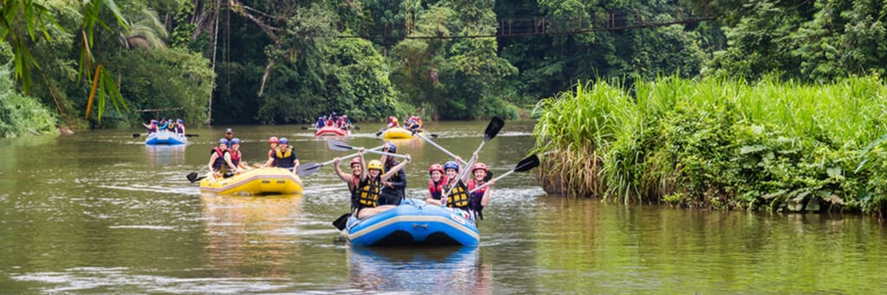
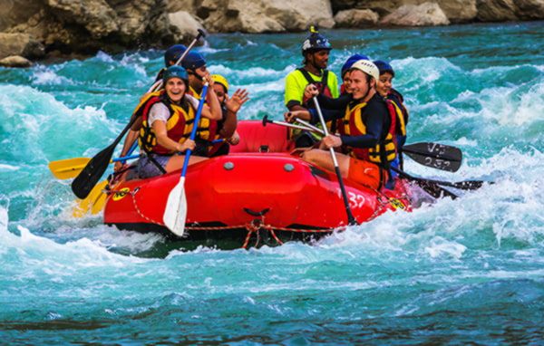
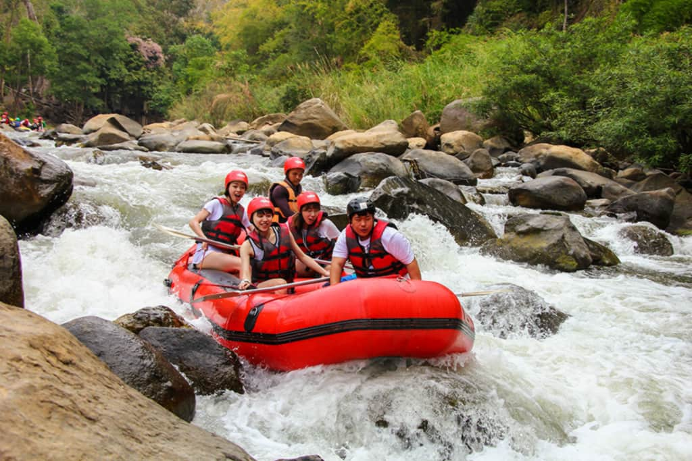
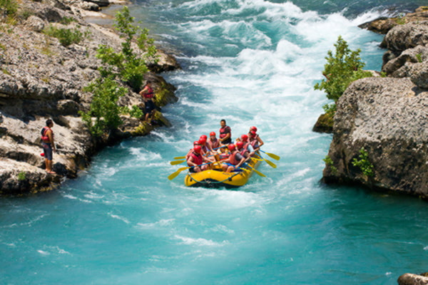
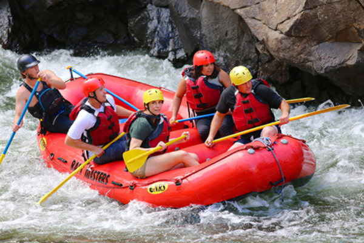
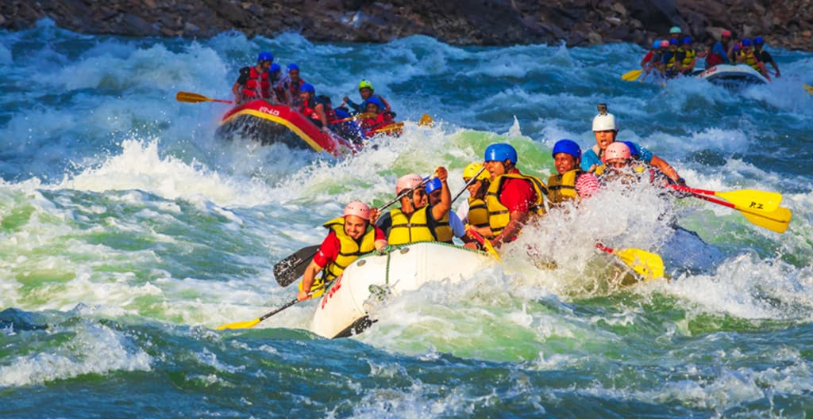
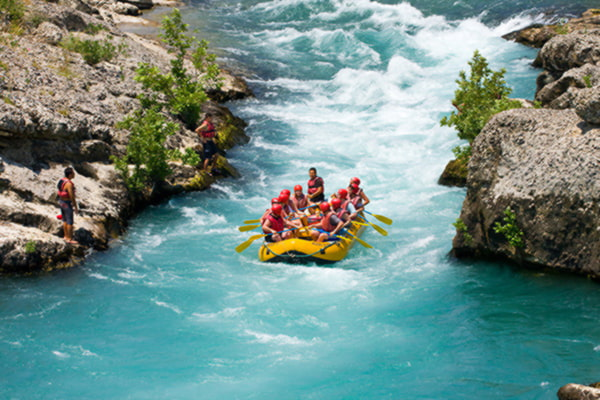
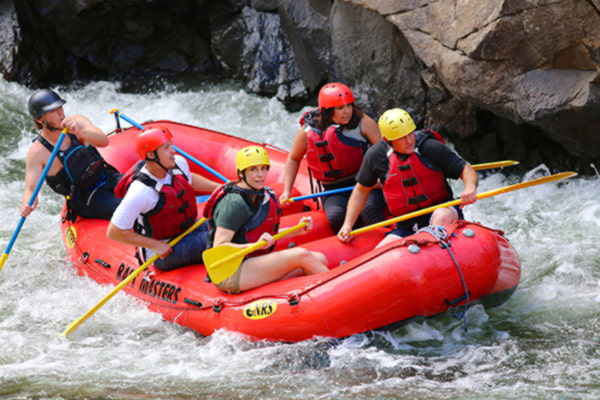
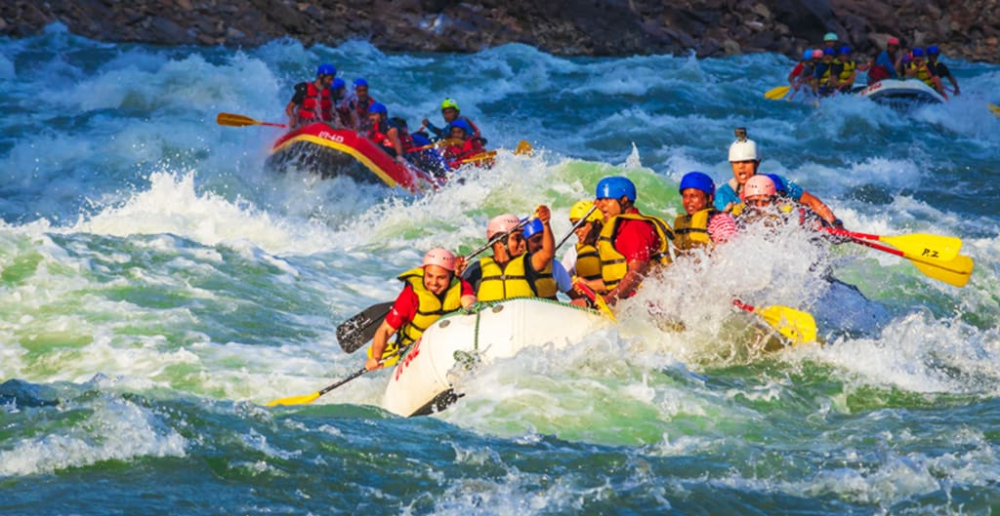

Did you know that that Leon is one of the most overrated brawlers in the current meta since 2023, its not because it's good, it's a brawler that most of the time doesn't require skill while playing and people with 10k or less trophies keep using him without aiming.


Whiterafting | Discover your passion
History
We also have Edgar, one of the most hated, unskilled and used brawler in all the game. It's normal when you start a match and see a lvl. 9 Egar with no gadgets or stellar, that means insta-lose, so, whenever you loose a match, don't be ashamed, instead, blame the Edgar main, they deserve it. Edgar is an Epic Brawler. He has a sort of magical scarf that apparently has a life of its own. Edgar was free during Brawl 2020 and can now be obtained in Starr Path. Edgar has low health and the shortest range in the game, however, Edgar has lifesteal, high damage, and an extremely fast recharge speed. In addition, Edgar has the ability to recharge his Super over time, just like Darryl and Max with his Super Charged Star Ability, which allows Edgar to quickly jump. His gadget, "Airborne," allows Edgar to quickly charge his Super. His first Star Ability, "Force Landing," adds a good chunk of damage to his Super. His second Star Ability, "Clean Punch," allows Edgar to heal more with his attacks.
Adventure Awaits You!
 




